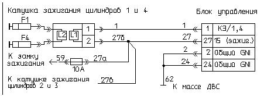

главная → коды ГАЗ
Код 081—максимальное смещение угла опережения зажигания (УОЗ) по детонации в цилиндре 1
- Причина 1: заниженное значение октан-корректора УОЗ.
- Причина 2: неисправность датчика детонации.
- Причина 3: нарушение градуировки датчика температуры воздуха.
- Причина 4: недостаточное охлаждение (перегрев) двигателя.
- Причина 5: низкое качество применяемого топлива.
- Причина 6: нарушение фазы газораспределения в цилиндре 1.
- Причина 7: большой нагар в камере сгорания цилиндра 1 двигателя.
- Причина 8: неисправность блока управления двигателем.
Заниженное значение октан-корректора УОЗ

- Проверьте: возможно в память блока записано отрицательное значение поправки угла опережения зажигания, что приводит к детонации двигателя.
- Если параметр UOZOC < 0, то необходимо установить UOZOC = 0. Если детонация имеет место, увеличить это значение еще на 1..3° поворота коленвала.
- После коррекции UOZOC сбросьте коды неисправности, запустите и прогрейте двигатель и проконтролируйте отсутствие кода неисправности «081» при движении автомобиля.
- Если это не приводит к положительным результатам—рассмотрите другие причины.
Неисправность датчика детонации

- Проверьте: возможно неисправен датчик детонации.
- Отсоедините защитный чехол розетки жгута проводов датчика. Включите зажигание, постучите твердым неметаллическим предметом по датчику и проверьте вольтметром переменного тока возрастание амплитуды сигнала от датчика детонации.
- Если прибор фиксирует изменение напряжение, отличное от нуля, то датчик предварительно можно считать исправным.
- Если изменений напряжения нет, тодатчик детонации неисправен и требует замены.
- Замените неисправный датчик детонации на исправный.
- После замены датчика включите зажигание и проконтролируйте отсутствие кода неисправности «081» при движении автомобиля.
Нарушение градуировки датчика температуры воздуха

- Проверьте: возможно градуировка датчика температуры воздуха не соответствует эталонной.
- Охладите двигатель до температуры окружающей среды. Проверьте параметры блока управления при включенном зажигании:
температура воздуха не должна быть ниже температуры охлаждающей жидкости более, чем на 5°C—в противном случае датчик температуры воздуха может быть неисправен.
- Значения, измеренные блоком можно сравнить с показаниям термометра—они не должны отличаться более, чем на 10°C.
- Замените датчик на заведомо исправный.
- Сбросьте коды неисправности, запустите двигатель, прогрейте его и проконтролируйте отсутствие кода «081».
Недостаточное охлаждение (перегрев) двигателя
- Проверьте: возможно наблюдается перегрев двигателя.
- Температура воздуха не должна быть выше 75°C, а температура охлаждающей жидкости не выше 105°C—в противном случае имеет место перегрев двигателя.
- Значения, измеренные блоком можно сравнить с показаниями термометра—они не должны отличаться более, чем на 10°C.
- Выполните профилактику системы охлаждения двигателя: проверьте уровень и качество охлаждающей жидкости.
- Проверьте исправность привода и муфты вентилятора охлаждения двигателя.
- Включите зажигание, сбросьте коды неисправности, запустите двигатель, прогрейте его и проконтролируйте отсутствие кода «081».
Низкое качество применяемого топлива
- Проверьте: возможно бензин не соответствует указанному в ТУ на двигатель по октановому числу и фракционному составу.
- Произведите замену бензина в топливных баках.
- Включите зажигание, сбросьте коды неисправности, запустите двигатель, прогрейте его и проконтролируйте отсутствие кода «081».
Нарушение фазы газораспределения в цилиндре 1
- Возможно не отрегулированы фазы газораспределения.
- Проверьте и отрегулируйте зазоры в клапанах привода распредвала.
- Снимите и проверьте степень износа распределительного вала, при необходимости—замените его.
- После профилактики двигателя включите зажигание, сбросьте коды неисправности, запустите двигатель, прогрейте его и проконтролируйте отсутствие кода «081».
Большой нагар в камере сгорания цилиндра 1 двигателя
- Возможно имеет место большой нагар в камере сгорания цилиндра 1.
- Проведите разборку двигателя, осмотрите состояние деталей цилинрово-поршневой группы и, при необходимости, выполните профилактику или ремонт и замену деталей.
- После профилактики двигателя включите зажигание, сбросьте коды неисправности, запустите двигатель, прогрейте его и проконтролируйте отсутствие кода «081».
Неисправность блока управления двигателем

- Отсоедините блок управления от жгута проводов и внимательно осмотрите целостность контактов розетки жгута и вилки блока.
При необходимости отрихтуйте контакты соединителя или замените их. При обнаружении воды в соединителе блок необходимо снять, остатки
воды удалить, просушить блок при температуре не выше 85°C.
- Подключите к системе контрольный блок управления.
- После замены тестируемого блока на контрольный включите зажигание, запустите двигатель и проконтролируйте отсутствие кода неисправности «081».
- Если код «081» не регистрируется на контрольном блоке, то замените тестируемый блок на исправный.
|